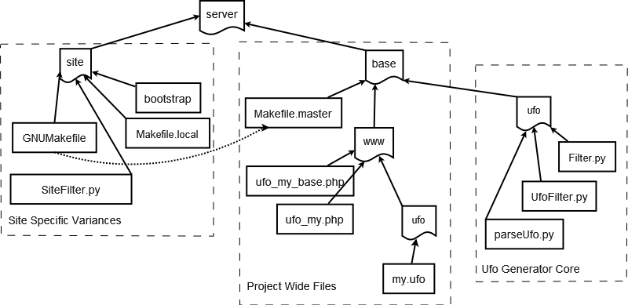

UFO: Walkthrough
Author: Russell Balest
E-mail: russell@balest.com
Copyright (C) 2006 Russell Balest
Forward:
The following walk-through will illustrate how to
obtain the server code framework, how to use it, and how to introduce
new
objects into the system.
In particular, you will declare a simple ufo class, and after
installing it, you will be able to create objects of the new class and
access them via URL mapping from a web browser.
Prerequisites:
You will need the following tools installed on your system
- Apache - version 2.0 preferably
- PHP - version 5 preferably
- Python - version 2.2 or higher
- SVN - Subversion version control system
- MySql or Postgres DB
Get the code:
For this example, we will use the Ambassador project as the starting
point. Checkout the project with the svn command:
svn checkout
https://projects.sitepen.com/svn/ambassador_cap/trunk
ambassador
The 2nd argument will prune the full svn path and create things under
the ambassador directory, eliminating the trunk subdirectory in this
case.
After checkout, you will find the following directory layout beneath
ambassador:

Refering to the diagram above, there are 2 directories beneath the
server directory: site
and base. In general,
files beneath the site directory are not edited and not under source
control. site is for
local configuration settings, as set in Makefile.local and links to
files under base. The
main purpose of the site directory, aside from local configurations, is
to support multiple sites that are variations of the same base
code. This directory can be cloned if you want to support
multiple sites. Why would you do this? You probably won't
but you could. For example, you could run 2 copies of the same
web site on your machine - one pulling data from a local database, and
the other pulling data from a shared public database. Aside from
the site specific configuration options specified in
Makefile.local, the file SiteFilter.py
( Site will replaced with a project name typically as in
<project>Filter.py), is an implementation of the Filter.Context class, and supports arbitrary
textual replacement, which is another mechanism for introducing site
specific variations on the base code.
Configure and install the site
- From the site directory,
run the command ./bootstrap
- Edit or create the file site/Makefile.local
- Set the parameters in Makefile.local to match your
environment
- From the site directory, run the command make db_create
- From the site directory, run the command make install
- Test site setup by
accessing the site with http://localhost/info.php
- Access the site itself with http://localhost/main.php (
this will probably be an error, but that's ok for now )
Add a new class to the system
- Go to the directory base/www/ufo
- Edit a new file called myclass.ufo
- Paste or type the following code into the file:
<ufo>
<class name="my_foo" oid="primary" container="my_foos">
<!-- This will generate a column in the DB -->
<var name="status" label="Status" type="int" default="0">status</var>
</class>
</ufo>
- Install the new class DB table by running make db_init from the server/site directory
- If things go wrong with the previous command, run make db_clean from the server/site directory
- Deploy the new class code by running make install from the server/site directory
Access the newly created class
For a full explanation of accessing object via URL
mapping, see the URL mapping section in the Ufo
Document.
For now, access the newly created class via its container,
with the following URL:
http://localhost/main.php?page=my_foos
This should generate an error. The reason is that this class has
not been declared to be web accessible yet.
You can add some auto-generated data having to do with access rights by
running make db_populate from
the server/site directory
Or, the more manual way to accomplish this is:
From a mysql command line, execute the following 2 lines, which will
create public access for the new classes:
insert into ufo_pagelayout (page,body,blocks,access,redirect) values ('my_foos', 'my_foos', '', 'public', '');
insert into ufo_pagelayout (page,body,blocks,access,redirect) values ('my_foo', 'my_foo', '', 'public', '');
These commands make the 2 classes my_foo
and my_foos web accessible,
and in particular, they are public,
which means they can be accessed without establishing a
session. This would almost never be permissible on a live
web site.
At this point you should be able to access the ufo_my_foos container by
again running:
http://localhost/main.php?page=my_foos
You should be able to add my_foo objects to this container as
well. Notice the URL as you add objects and submit
them. Absent from the URL is the ufo[oid] parameter. If you
view the source in the browser you will notice that ufo[oid] is being
passed as a hidden form field in this case.
Add a class that contains another class
In this example, things get more sophisticated. First we
define a leaf class ( all members are basic types ), then we
define a class that contains a reference to a leaf class.
First
the leaf class:
- Go to the directory base/www/ufo
- Edit a new file called address.ufo
- Paste or type the following code into the file:
<ufo>
<class name="address" oid="primary" container="addresses">
<var name="street" label="Street" type="string">street</var>
<var name="city" label="City" type="string">city</var>
<var name="state" label="State" type="string">state</var>
</class>
</ufo>
Now the 2nd order class:
- Edit a new file called contact.ufo
- Paste or type the following code into the file:
<ufo>
<import file="address.ufo">address</import>
<class name="contact" oid="primary" container="contacts">
<var name="status" label="Status" type="int" default="0">status</var>
<!-- Reference to an address object -->
<reference>
<var name="address" label="Address" type="object" constraint="user">address</var>
</reference>
</class>
</ufo>
- Install the new class DB tables by running make db_init from the server/site directory
- If things go wrong with the previous command, run make db_clean from the server/site directory
- Deploy the new class code by running make install from the server/site directory
Access the new classes:
- Visit the URL http://localhost/main.php?page=addresses
- Create a few new address objects
- Visit the URL http://localhost/main.php?page=contacts
- Create a new contact object
- Notice that you will be able to reference an address object
that you previously created!
What other object relationships can be expressed?
The last example illustrates the pattern - "III: Non-Terminal Class Reference Level I"
which is documented in patterns.txt.
In this document, I attempt to catalog all of the common object
relationship patterns that can be expressed in the Ufo XML schema.